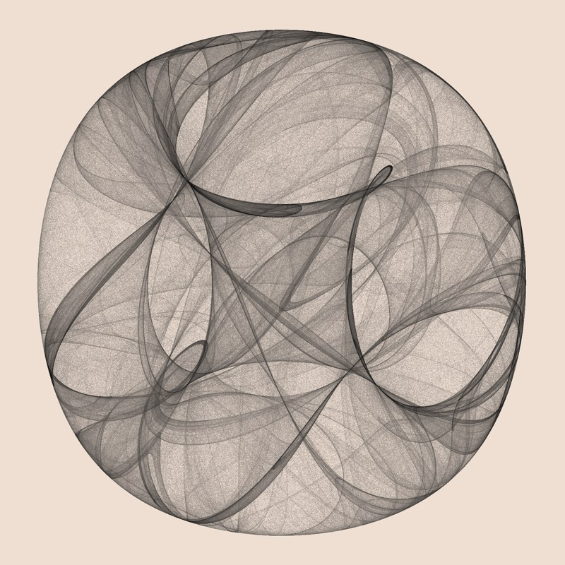

No. 1
Clifford Attractor
x' = sin(a y) + c cos(a x) y' = sin(b x) + d cos(b y)
a = -1.3, b = -1.3, c = -1.8, d = -1.9, 10 million points
Two lines of trigonometry, iterated ten million times. Each point is computed from the one before it, and the orbit never settles into a repeating loop, yet it always traces the same tangle of ribbons. Darker ink means more visits.
source